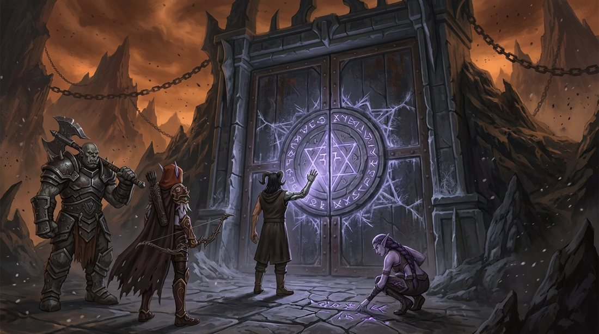

Capítulo Vinte
A porta que ninguém abriu
A caçada começou de um jeito humilhante: com os quatro sentados em volta do fogo admitindo, em voz alta, que não faziam a menor ideia de por onde começar.
— Nós não temos nome — disse Varokh, contando nos dedos. — Não temos rosto, porque aquilo não tinha. Não temos território. Não temos nem a certeza de que ele é um.
— Temos o símbolo — disse Elyra.
— Temos um risco na pedra.
— É mais do que tínhamos ontem.
Sylvanas estava com a placa de metal de Nathan no colo, a mesma que ele arranhava havia dois anos e meio, agora coberta de anotações dos dois.
— Nós temos três coisas — disse ela. — O símbolo. O fato de que ele coleciona. E o fato de que ele precisa de portas.
Nathan levantou os olhos.
— Portas.
— Ele mesmo disse. Abrir uma custa muito. Ele levou dois anos para abrir a que trouxe você. — Ela apontou para o mapa. — Uma coisa que precisa de portas precisa construí-las em algum lugar. E construir deixa rastro.
— A gente já viu duas — disse Nathan, devagar. — A do poço e a do desfiladeiro.
— E as duas ficavam perto de estruturas grandes que continuavam inteiras.
Varokh parou de mastigar.
— Nada fica inteiro na Gorja a não ser que algo esteja mantendo inteiro — disse ele. — Eu falo isso há quatrocentos anos e ninguém nunca me ouviu.
— Eu ouvi — disse Nathan.
— Você ouve tudo. Isso é uma doença sua.
✦
Levaram quatro meses.
Foi um trabalho tedioso e metódico, e Nathan descobriu que gostava dele de um jeito que não sabia explicar: percorrer setores, marcar estruturas em pé, riscar as que se desfaziam ao toque, anotar as que não se desfaziam.
Encontraram dezenove estruturas inteiras. Dezesseis não tinham nada.
Duas tinham fendas velhas, já mortas, fechadas havia tanto tempo que a rocha em volta nem estava mais fria.
A décima nona tinha uma porta.
✦
Elyra a viu primeiro, do alto de uma crista, e a única coisa que disse foi:
— Ah.
Levaram meio dia para descer até ela.
Era enorme. Uma estrutura de pedra meio enterrada na encosta, do tamanho de um edifício, com um portal de ferro no centro que devia ter cinco vezes a altura de Varokh. E o portal estava fechado — não desabado, não emperrado: fechado, com as duas folhas encostadas uma na outra e uma junta tão limpa que nem poeira entrava.
No meio das folhas havia um selo circular gravado, com sigilos geométricos que brilhavam num violeta fraco e constante.
E gelo. Gelo se espalhando pela pedra em volta, exatamente como no desfiladeiro.

Nathan parou a uns quinze metros e não chegou mais perto.
— É o mesmo símbolo — disse.
— Tem certeza?
— Sylvanas, eu vi essa coisa embaixo do meu rosto durante vinte e seis dias.
Elyra estava agachada a alguns metros, examinando marcas menores no chão — uma fileira delas, gravadas na pedra, saindo da porta em direção ao vale.
— Gente — chamou. — Isto aqui não é decoração. Isto é uma fila.
Sylvanas se aproximou.
As marcas continuavam por centenas de metros, igualmente espaçadas, sumindo na névoa: o mesmo tipo de espaçamento das almas em coluna no poço. O mesmo dos degraus do anfiteatro.
— Elas eram trazidas até aqui — disse ela.
— E entravam.
— E entravam.
✦
Varokh contornou a estrutura inteira, sozinho, e voltou com uma cara que ninguém gostou.
— Não tem outra entrada — disse. — Nenhuma janela. Nenhuma fresta. E a pedra do fundo está lisa: não foi cortada, foi fundida.
— Então só se entra por aqui.
— Só se entra por aqui.
Nathan ficou olhando o selo por um tempo longo.
— Eu consigo abrir — disse.
Todos se viraram.
— Eu não estou dizendo que devo. Estou dizendo que consigo. — Ele ergueu a mão de metal na direção da porta, sem tocar em nada, e o brilho violeta dos sigilos aumentou de intensidade em resposta, como se tivesse reconhecido alguém. — Está vendo? Ela responde. Igual à cicatriz do desfiladeiro.
— Chave — disse Elyra, muito baixo.
— É.
Sylvanas não disse nada.
Ela estava olhando não para a porta, mas para Nathan — para a mão erguida, para o brilho respondendo, para a facilidade daquilo — e havia alguma coisa no rosto dela que ele levou dois segundos para reconhecer, porque nunca a tinha visto direcionada a ele.
Era cálculo.
Frio, rápido, profissional. O mesmo olhar com que ela media uma criatura antes de decidir onde atirar.
Ela percebeu que ele percebeu.
E não desviou.
— Diga — falou Nathan.
— Não aqui.
✦
Falaram naquela noite, na vigília, longe do fogo.
— Você estava me calculando — disse ele. Não era acusação. Era constatação, no tom mais tranquilo que ele tinha.
— Estava.
— Calculando o quê?
Sylvanas demorou.
— Se você é a nossa maior vantagem — disse — ou a coisa mais perigosa que existe neste plano.
Nathan assentiu devagar.
— E chegou a alguma conclusão?
— Cheguei a duas. — Ela olhou para frente. — A primeira é que você é as duas coisas ao mesmo tempo, e que isso não é contraditório.
— E a segunda?
— Que eu sou a última pessoa nesta Gorja com autoridade moral para achar isso um problema.
Ele riu — um riso curto, sem alegria nenhuma.
— Isso foi bem sombrio.
— Foi honesto.
Ficaram calados um tempo.
— Nathan. — A voz dela mudou. — Eu preciso te dizer o que eu penso sobre aquela porta e você não vai gostar.
— Fala.
— Ela não é uma saída dele. Ela é uma entrega. — Sylvanas se virou. — As almas vinham em fila e entravam. Ninguém saía. Aquilo não é uma porta de casa, é a boca de um depósito. E nós esvaziamos o depósito grande faz cinco meses.
— Você acha que ele está com fome.
— Eu acho que uma coisa que coleciona e acabou de perder a coleção vai querer repor.
Nathan olhou para o horizonte.
— E se a gente abrir, a gente entrega a única chave que ele não tem.
— Sim.
— E se a gente não abrir, a gente nunca chega nele.
— Também sim.
Ele passou a mão pelo rosto.
— Eu odeio quando você faz isso.
— Eu não fiz nada. A situação é que é assim.
— Você enuncia a situação de um jeito que faz parecer que não tem saída.
— Porque enunciar mal não cria saída nenhuma — disse Sylvanas. — Só faz a pessoa se sentir melhor até morrer.
✦
Voltaram à porta no dia seguinte, e foi Elyra quem quebrou o impasse — do jeito dela, sem perceber que estava quebrando nada.
Ela estava mapeando a fila de marcas quando parou e franziu a testa.
— Que estranho.
— O quê?
— As marcas param.
Todos se viraram.
— Como assim, param?
— Elas vêm do vale até aqui, certo? Fila perfeita, espaçamento igual. — Ela apontou para trás, na direção da névoa. — Mas as últimas trinta estão borradas. Como se as almas tivessem parado de andar em fila e começado a andar de qualquer jeito.
Sylvanas atravessou a distância em silêncio e se agachou ao lado dela.
Ficou olhando por um tempo muito longo.
— Elas não pararam de andar em fila — disse. — Elas correram.
— Almas não correm.
— Estas correram. — Ela apontou. — O espaçamento se abre aqui e depois se espalha. Isso não é uma coluna que se desfez. É uma coluna que se dispersou de uma vez.
Varokh olhou para a porta fechada.
— Elas estavam fugindo — disse.
— De quê?
E Nathan, que estava calado havia bastante tempo, falou:
— Da porta.
Ninguém respondeu.
— Elas estavam sendo levadas para dentro e em algum momento pararam e voltaram correndo — continuou ele, devagar, montando a coisa enquanto falava. — O que significa que alguma coisa mudou. Alguma coisa que fez até uma alma sem nome e sem rosto decidir que preferia a Gorja.
Ele olhou para o selo violeta.
— Isto não está fechado para nos impedir de entrar — disse. — Está fechado para impedir alguma coisa de sair.
✦
O silêncio durou um tempo desconfortável.
— Bem — disse Elyra, com a voz uma oitava acima do normal. — Eu odiei isso. Eu odiei muito isso.
— Pode ser leitura errada — disse Varokh.
— Pode — concordou Nathan. — Mas você acha que é?
Varokh olhou para a porta por um bom tempo.
— Não — disse. — Eu já vi porta trancada por fora. Aquilo ali foi trancado por alguém com pressa.
Sylvanas se levantou e limpou a mão na coxa.
— Então nós temos uma informação nova e muito boa — disse.
— Boa? — Elyra a encarou. — Sylvanas, tem uma coisa presa aí dentro que assustou almas mortas.
— Exatamente. — A voz dela estava perfeitamente calma. — O Colecionador construiu essa porta, encheu de coisas e depois selou às pressas. Isso significa que existe pelo menos uma coisa nesta Gorja que ele não controla.
Ela olhou para os três.
— E que ele tem medo.
✦
Acamparam a dois quilômetros da estrutura, porque ninguém quis dormir mais perto.
Nathan ficou acordado até tarde, riscando a placa de metal, refazendo o esquema da porta pela quarta vez. Sylvanas sentou-se ao lado dele em algum momento e ficou olhando por cima do ombro sem dizer nada.
— Você vai propor alguma coisa — disse ela, por fim.
— Vou.
— Eu não vou gostar.
— Provavelmente não.
Ele virou a placa para ela.
— Eu não quero abrir a porta — disse. — Eu quero bater nela.
Sylvanas franziu a testa.
— Explique.
— A porta responde a mim. Um pouquinho de Vazio e o selo se acende. — Ele apontou o esquema. — Eu não preciso abrir para descobrir o que tem dentro. Eu preciso só... cutucar. Dar um toque forte o bastante para a coisa lá dentro reagir. E aí a gente escuta.
— Você quer acordar aquilo.
— Eu quero saber o tamanho daquilo. Do lado de fora, com a porta fechada, e com um plano de fuga que a Elyra já está desenhando.
Sylvanas ficou muito quieta.
— E se bater abrir?
— Aí eu estava errado e a gente corre muito.
— Nathan.
— Eu sei. — Ele largou a placa. — Olha, eu passei um ano inteiro aprendendo a consertar coisas que eu não entendia, e a primeira regra é sempre a mesma: você não desmonta nada antes de saber o que tem dentro. A gente está parado na frente de uma caixa fechada há dois dias fazendo teoria.
— Teoria mantém as pessoas vivas.
— Teoria manteve você parada na borda do anfiteatro por meses.
Assim que disse, ele fez uma careta.
— Desculpa. Isso foi golpe baixo.
— Foi — disse Sylvanas. — E foi verdade.
Ela pegou a placa das mãos dele e ficou olhando o esquema por um tempo longo.
— Um toque — disse, enfim. — Um. Você não improvisa, você não aumenta, você não decide nada sozinho no meio.
— Combinado.
— E eu fico a três metros.
Nathan olhou para ela.
— Você percebe que transformou esse número numa espécie de juramento.
— Eu percebo perfeitamente — disse Sylvanas, devolvendo a placa. — Durma. Amanhã você vai bater numa porta que não devia existir, e eu prefiro que esteja descansado quando fizer isso.
✦
Ele dormiu.
Ela não.
Ficou sentada de frente para a entrada do abrigo — a posição dele, que ela tinha adotado sem nunca comentar — com o arco no colo e os olhos no vermelho baixo de quem está pensando em várias coisas ao mesmo tempo.
E às três da madrugada, quando Nathan se mexeu no sono e murmurou alguma coisa que ela não entendeu, Sylvanas fez uma coisa que não fazia desde Quel’Thalas.
Ela rezou.
Não para nada em particular. Não sabia mais para quem se reza num lugar onde a morte já aconteceu com todo mundo.
Mas rezou assim mesmo, em silêncio, muito rápido, com a vergonha imensa de quem sabe que não tem direito.
E o pedido foi curto:
Não de novo.